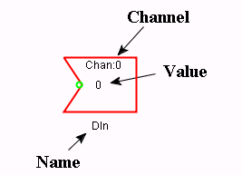

Language Reference - IO - Digital Input (Inverse Logic)
Note: To use real IO you need to disable Simulator Mode.

A digital input with inverse logic works the same as a
Digital Input with the exception
that when the value is read from a real IO, the read value is inverted.